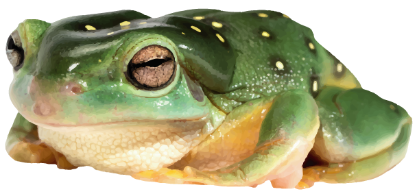

|  | 🐸 F R O G S 🐸(things about frogs) |
 |
ABCEHLTWX
H E L L O
Here is a website about frogs. With some information about the frogs and a few multimedia items, also about the frogs. I am kind of running out of content to put here and I've also gone too far down the frog hole in making this website a bit too much about frogs. Oh well, I have done it now and it looks like I like frogs way more than I do but that is OK, I have made peace with that. Enjoy my website I hope you enjoy the greeness of it all. Good day.